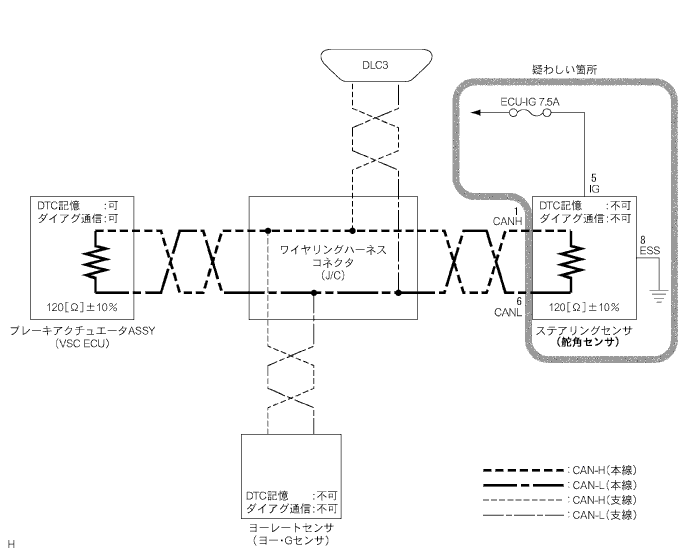
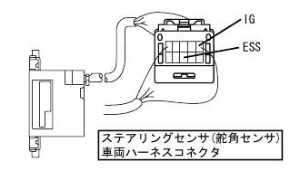

制御系CAN通信システム 舵角センサ通信途絶モード
印刷
準備品一覧
機能説明
U0126/63(VSC)はVSC ECUが出力する。
診断項目
症状
疑わしい箇所
舵角センサ通信途絶モード
U0126/63(舵角センサ通信異常)が出力している
舵角センサ電源/内部異常
■ 注 意 ■
U0121/94(ABS)、U0123/62(VSC)、U0124/95(ABS)が同時出力していないこと。
U0121/94(ABS)、U0123/62(VSC)、U0124/95(ABS)以外のダイアグコードは、上記ダイアグコードと同時出力する可能性がある。
回路図
手順1
ワイヤハーネス点検（ＩＧ，ＥＳＳ）
SST
09082-00030
09083-00150


SST(トヨタエレクトリカルテスター)を使用して、ステアリングセンサの各端子←→ボデーアース間を点検する。
■ 注 意 ■
コネクタを接続した状態で、コネクタの裏側から点検する。
基準:
点検端子
測定条件
基準
5(IG)←→ボデーアース
IGスイッチON
10－14V
8(ESS)←→ボデーアース
常時
導通あり
NG
ワイヤハーネスまたはコネクター修理または交換
OK
ステアリング センサ交換